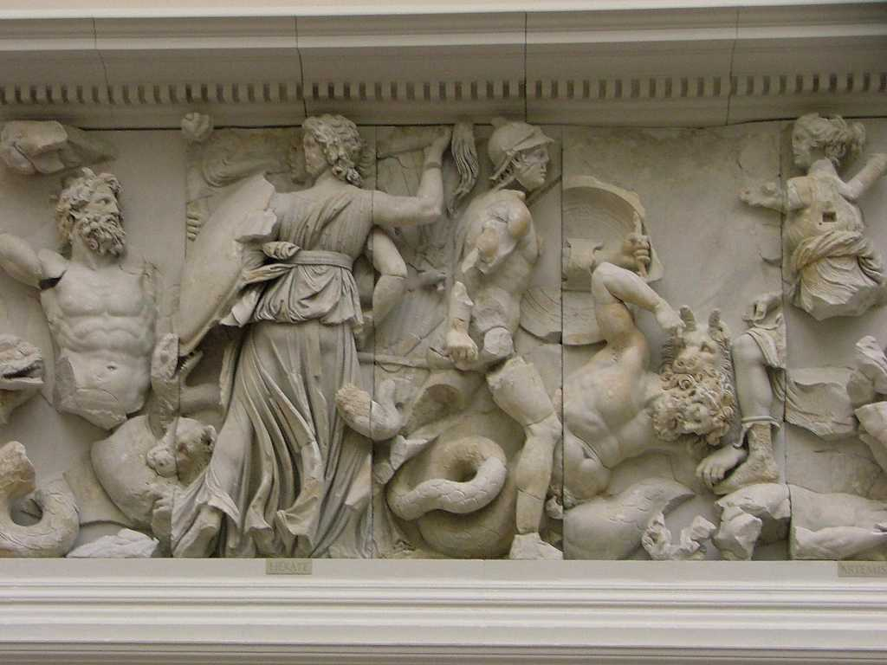
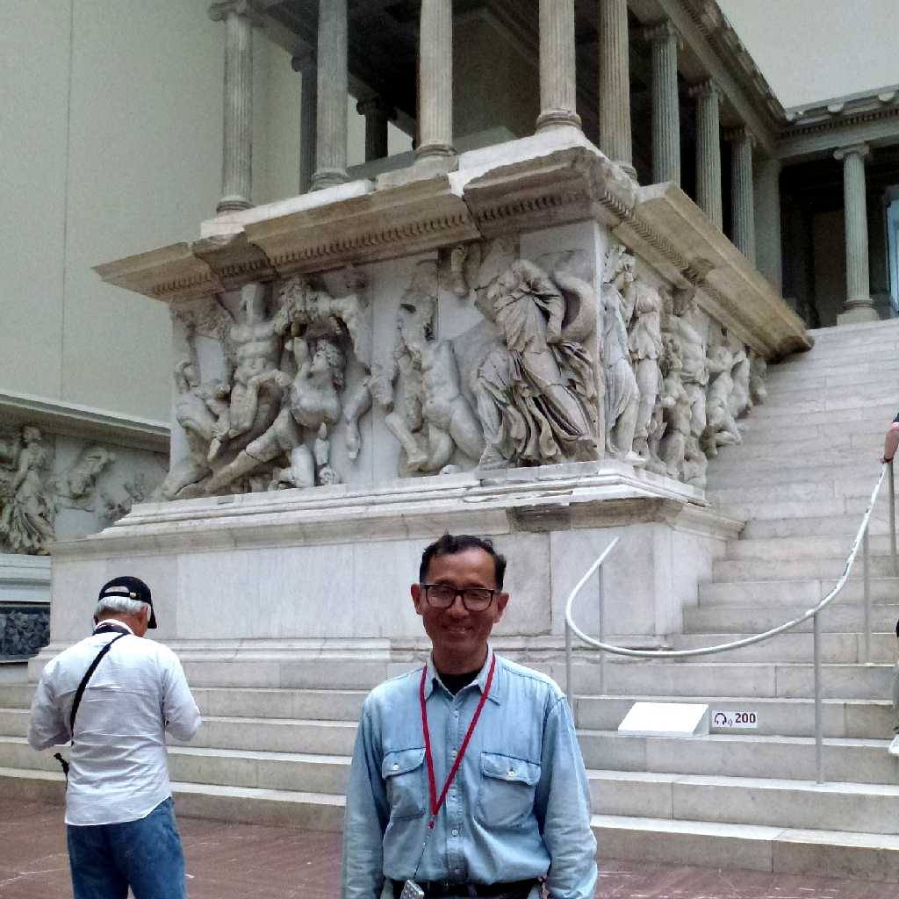

August 1989 Pergamon Altar Pergamon Museum Berlin
紀元前２世紀頃に創られたペルガモン神殿の大祭壇は綺麗に保存されており世界で最も美しいフリーズと言われているが現地での鑑賞は残念ながらできない Bergama

Frieze Pergamon Altar
ギリシャ古代神話の神々と巨人達が戦う姿を彫ったもので全長１１３ｍにもおよぶギリシャ彫刻の傑作

June 14 2014 Pergamon Altar
約３０年ぶりの再訪問で日本語音声ガイド付きでした